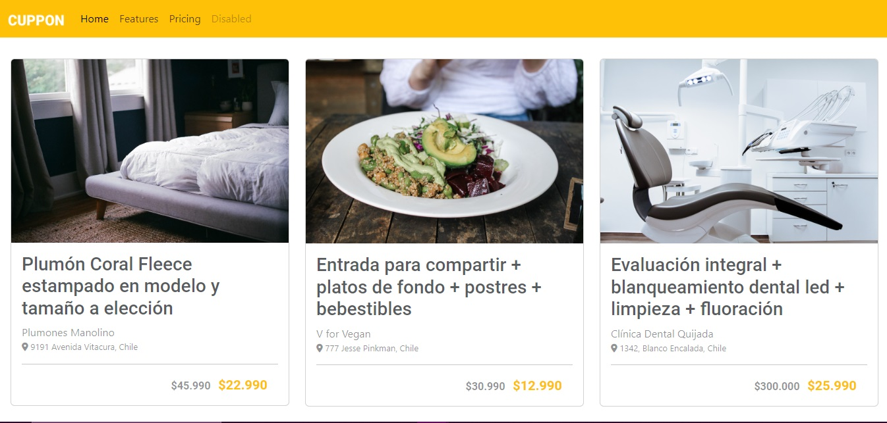
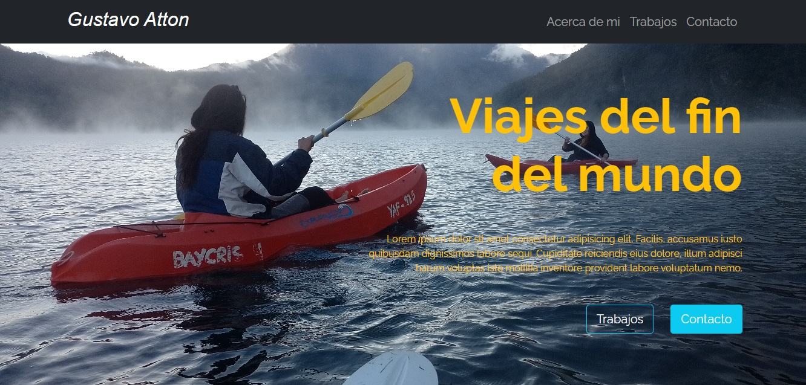
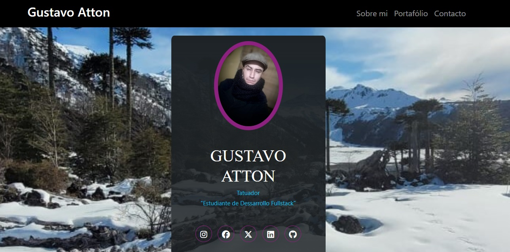

Portafolio

Desafio 01 Cv Html
Introducción al uso de estructura en Html y VSC

Desafio 02 LandingPage Css
Introduccion al uso de Css

Desafio 03 Flexbox
Contruccion de Landing Page con uso de flexbox

Desafio 04 Cuppon
Uso de Bootstrap y columnas para cambio de formato

Desafio 05 Fork Github
Forkeado, Clonado y Modificado a travez de Git y Github

Primer cv en Github C
Construccion de CV mas portafolio con herramientas de html css y bootstrap enlazarlo a github y crear el link